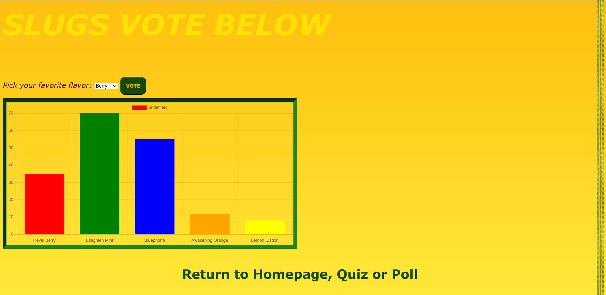
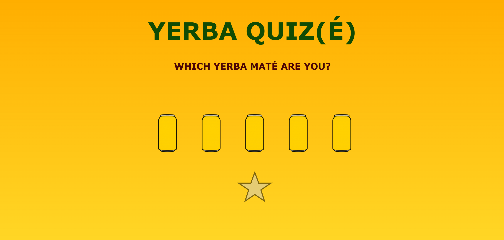
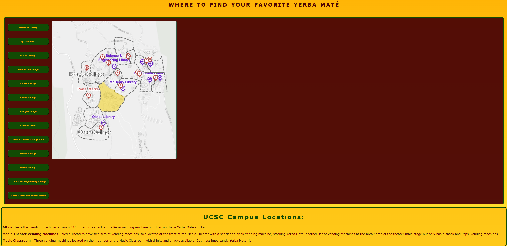

MATE NOW - UCSC Group Project



Role:
Programmer, Designer (primarily worked on poll page)
This project was for a class at UCSC, ART101. It was a group project where our job was to make a website addressing any problem we could think of. Our group was inspired by yerba mate and its availability on campus so we decided to make a website dedicated to finding all the places that have yerba mate on campus, and also included polls about what your favorite flavor says about you and other features. It’s a fun, interactive website that my group wanted users to have fun with and enjoy.
Visit the Webiste